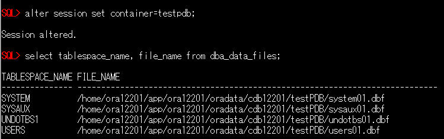

はじめに
Database Cloud Service (DBCS)では、12c 以降のデータベースをプロビジョニングした場合、デフォルトでマルチテナント・コンテナ・データベース(CDB)で作成されます。 CDBで構成されているオンプレミスのデータベースからDBCSへ移行する場合、PDBのアンプラグ・プラグを行う事で簡単に移行可能です。 その際、両データベースのバージョンに差異があった場合は autoupgrade等のツールを利用する事で、バージョンアップも行う事が可能です。
ここでは、オンプレミスのデータベース(12.2.0.1)からDBCS(19.12.0.0.0)へPDBを移行する手順をご紹介します。
前提条件 :
-
移行元のデータベースがCDBで構成されていること
-
Oracle CloudでOracle Databaseを使おう を通じて Oracle Database の作成が完了していること
-
DBCS上に最新バージョンのautoupgrade.jarが配置されていること
※最新版は Doc ID 2485457.1 からダウンロード可能です
目次
所要時間 : 約1時間30分
1. 移行元のデータベースからPDBをアンプラグする
まずは移行元のデータベースから、移行対象のPDBをアンプラグします。 アンプラグはDatabase Configuration Assistantツールを使って行う事も可能ですが、今回はコマンドでの実施手順を紹介します。
- 対象PDBの構成確認します
PDBの移動にあたってデータファイルをDBCSに持っていく必要があります。
まずは下記SELECT文にて対象PDBで使用しているデータファイルのディレクトリを確認します。
alter session set container=<pdb_name>; select tablespace_name, file_name from dba_data_files;（作業イメージ）
 - 対象PDBをクローズします
alter pluggable database <pdb_name> close; - 対象PDBのアンプラグします
alter pluggable database testpdb unplug into '<任意のディレクトリ>/testpdb.xml'; -
対象PDBで使用しているデータファイル、及びアンプラグ時に生成されたxmlファイルをDBCS上のディレクトリにコピーします
- 移行元のデータベースにはアンプラグしたPDBの情報が残りますので、必要に応じて削除して下さい。
以上でPDBのアンプラグ完了です。
2. DBCSにPDBをプラグし、アップグレードを行う
- アンプラグ時に生成されたxmlファイルを開き、データファイルのパスをDBCS上のパスに書き換えます
※次の例では、データファイル及びxmlファイルをDBCS上の/home/oracle/work/ディレクトリ配下に配置しています。- 書き換え前

- 書き換え後

- CDBに接続し、PDBのプラグを実行します
create pluggable database <pdb_name> using '<xmlファイルのフルパス>' file_name_convert = ('<データファイルの配置ディレクトリ>','<データファイルの再配置先>');（作業イメージ）
※testpdb2 という名前でプラグしており、ASMディスクグループ上に再配置する為に”+DATA” を指定
- プラグしたPDBをアップグレードモードで起動します
alter pluggable database <pdb_name> open upgrade; - catctl.plを使用してプラグしたPDBに対してアップグレードスクリプトを実行します
export ORACLE_BASE=/u01/app/oracle $ORACLE_HOME/perl/bin/perl $ORACLE_HOME/rdbms/admin/catctl.pl -d \ $ORACLE_HOME/rdbms/admin -c '<PDB_NAME>' -l $ORACLE_BASE catupgrd.sql - autoupgrade.jarを使用してアップグレード後の修正を実行し、INVALIDオブジェクトをコンパイルします
java -jar autoupgrade.jar -preupgrade "dir=/tmp,inclusion_list=<PDB_NAME>,target_home=$ORACLE_HOME" -mode postfixups - プラグしたPDBを再起動し、通常モードでオープンします
alter pluggable database <PDB_NAME> close immediate; alter pluggable database <PDB_NAME> open; - catctl.plを使用してutlrp.sqlを実行します
$ORACLE_HOME/perl/bin/perl $ORACLE_HOME/rdbms/admin/catcon.pl -c '<PDB_NAME>' -n 1 -e -b comp -d '''.''' $ORACLE_HOME/rdbms/admin/utlrp.sql
3. 表領域の暗号化を行う
DBCS上のデータベースでは、セキュリティ観点から表領域の暗号化を強く推奨しており、非暗号化の表領域を新規作成する事ができません。 移行元のデータベースで表領域を暗号化していない場合、プラグ後のPDBも表領域は暗号化されていない為、次の手順にて暗号化する事が可能です。
- プラグしたPDB用のTDEマスター暗号化鍵を生成します
alter session set container=<PDB_NAME>; administer key management set key force keystore identified by "<TDE wallet password>" with backup; - 表領域の暗号化変換を行います
alter session set container=<PDB_NAME>; alter tablespace <TABLESPACE_NAME> encryption online encrypt; - PDBを再起動し、pdb_plug_in_violationsビューに”PENDING”となっている項目がない事を確認します
select * from pdb_plug_in_violations where status <> 'RESOLVED';
なお、プラグしたPDBがOCIコンソール上に表示されるまでタイムラグがありますので、暫くお待ち頂いてからご確認下さい。
以上で、この章の作業は完了です。